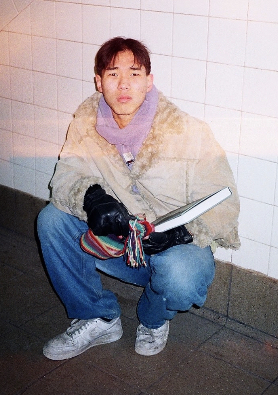

Jay Park is a recent-convert to digital art delving into the intersection of art and technology. Whether it be in making the internet a more intuitional space through UX/UI development or through his theoretical research into neoCybernetics especially the ontological potential in machine vision being explored in younger methods of design. A few months in, the artist/undecided-hard-science-focus is in a learning phase in his career. Currently he is building up skills in Full Stack WebDev, 3D-slash-4D graphics, and computational design algorithms. Along with his collaborator Eric Joo, the two designers built this very website for this show employing three.js components with simple vanilla HTML, CSS and JS scripts.
Throughout this semester, the two plan to start a small, virtual design studio based in Los Angeles and New York and have more future plans than current commissions, although work is steadily rolling in. Jay himself is in his last year of college, and is using this thesis project as a compromise between pure experimentation and implementable product design, planning to post his work on this website throughout the next couple months, even after the show's physical end. He hopes you enjoy your time on the page and become a frequent visitor experiencing the show's development throughout the next six-month roll out.